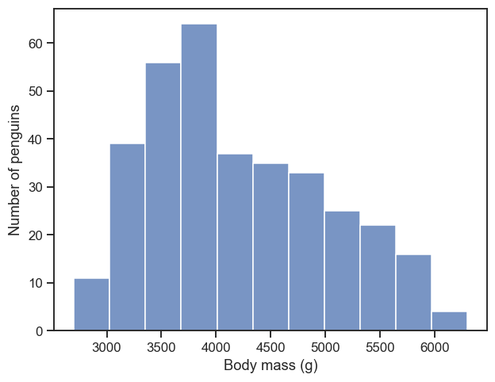
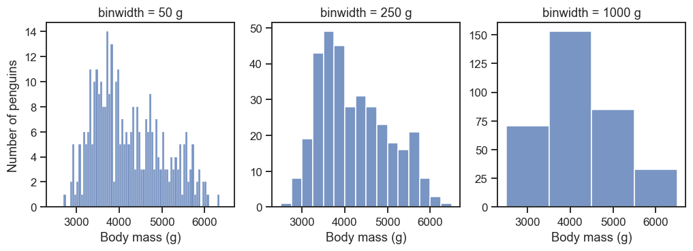
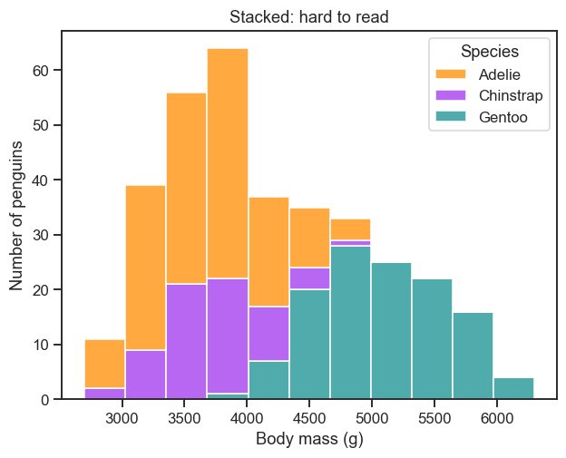
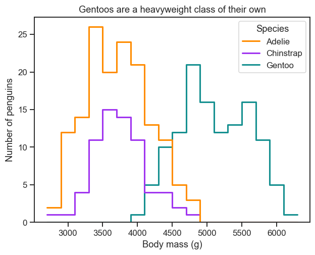
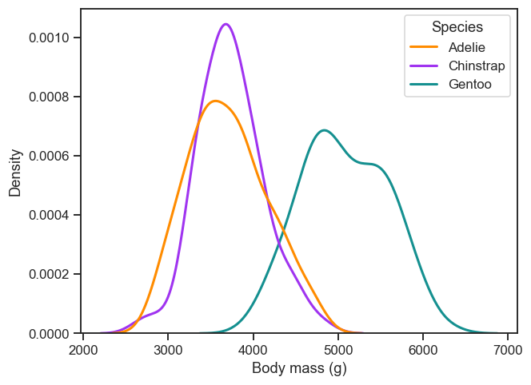
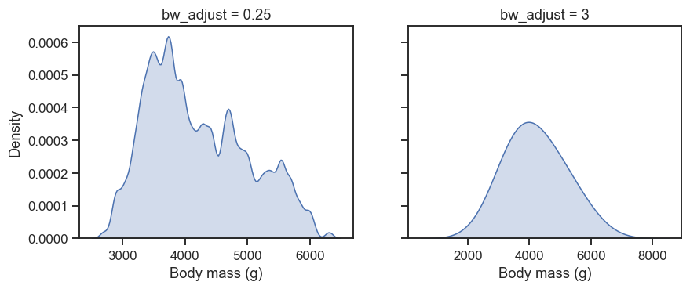
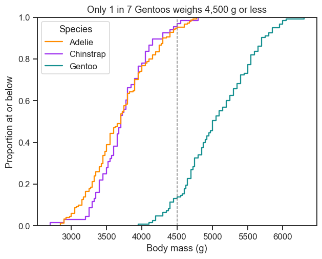
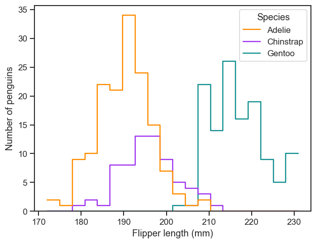
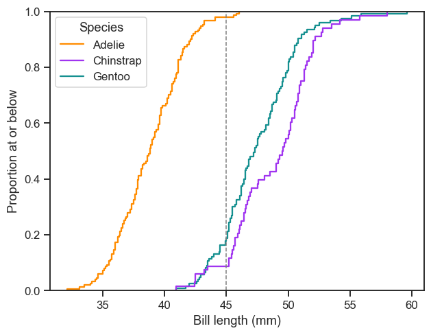

Lesson 2 - Distributions: how heavy is a penguin?
An average hides almost everything interesting. Before you compare means, look at the whole spread: where values pile up, how wide they range, and whether there's more than one peak.
By the end of this lesson you can:
- draw histograms with
histplotand choose bin widths on purpose - compare groups with overlaid steps instead of stacked bars
- draw smooth density curves with
kdeplotand know when they mislead - read an ECDF (
ecdfplot) to answer “what fraction is below X?”
import pandas as pd
import matplotlib.pyplot as plt
import seaborn as sns
sns.set_theme(style="ticks")
penguins = sns.load_dataset("penguins")
PENGUIN_COLORS = {"Adelie": "#FF8C00", "Chinstrap": "#A034F0", "Gentoo": "#159090"}
SEX_COLORS = {"Female": "#8c8c8c", "Male": "#333333"}
A histogram in one line
ax = sns.histplot(data=penguins, x="body_mass_g")
ax.set(xlabel="Body mass (g)", ylabel="Number of penguins")

A histogram sorts values into bins and draws a bar for each bin’s count. This one is lumpy, with a big hump on the left and a shoulder on the right. That’s a clue that more than one group is mixed together.
Bin width changes the story
Seaborn picks a bin width for you. It’s a reasonable guess, but still a guess. Here are three choices side by side. plt.subplots makes a row of empty Axes, and each seaborn call draws into one of them with ax= (Lesson 6 covers this properly):
fig, axes = plt.subplots(1, 3, figsize=(11, 3.2), sharey=False)
for ax, width in zip(axes, [50, 250, 1000]):
sns.histplot(data=penguins, x="body_mass_g", binwidth=width,
binrange=(2500, 6500), ax=ax)
ax.set(title=f"binwidth = {width} g", xlabel="Body mass (g)", ylabel="")
axes[0].set_ylabel("Number of penguins")

Narrow bins show noise. Very wide bins wash out the two humps. Try a few widths, and pick one that shows real structure without inventing any. You can set binwidth= or bins= (a count). binrange= pins where the first bin starts and the last one ends. Without it, seaborn fits a whole number of bins between the smallest and largest value, so the width you get is only close to the one you asked for: binwidth=1000 on its own would draw four 900 g bins here.
Compare groups: layer, don’t stack
ax = sns.histplot(data=penguins, x="body_mass_g", hue="species",
palette=PENGUIN_COLORS, multiple="stack")
ax.set(xlabel="Body mass (g)", ylabel="Number of penguins", title="Stacked: hard to read")
ax.get_legend().set_title("Species")

Stacking answers “how many penguins in total per bin?” To compare species, though, you have to judge the Chinstrap and Gentoo bars from a floating baseline. Overlaid step outlines put every group on the same zero line:
ax = sns.histplot(data=penguins, x="body_mass_g", hue="species",
palette=PENGUIN_COLORS, element="step", fill=False,
linewidth=2, binwidth=200)
ax.set(xlabel="Body mass (g)", ylabel="Number of penguins",
title="Gentoos are a heavyweight class of their own")
ax.get_legend().set_title("Species")

fill=False draws outlines only. Filled layers would blend where they overlap: purple over orange turns muddy pink, a color that belongs to no species.
Give comparisons a common baseline
People judge position along a shared scale far more accurately than length from a floating start. When readers must compare groups, give each one the same baseline. Use layered steps, or separate panels on shared axes (Lesson 5).
Smooth curves: kernel density estimates
A KDE replaces bars with a smooth curve. It’s easier to overlay, but it involves a choice you don’t see.
ax = sns.kdeplot(data=penguins, x="body_mass_g", hue="species",
palette=PENGUIN_COLORS, common_norm=False, linewidth=2)
ax.set(xlabel="Body mass (g)", ylabel="Density")
ax.get_legend().set_title("Species")

Outlines again, for the same reason as the histogram. fill=True looks lovely for a single curve, but where filled curves overlap they blend into a color that belongs to no species.
Two settings to know:
common_norm. By default (True) all the curves together have area 1, so a small group (68 Chinstraps) gets a short curve.common_norm=Falsegives each species area 1, which compares shapes fairly.bw_adjust. This sets how much smoothing to use. Too little gives spurious wiggles. Too much melts real peaks together:
fig, axes = plt.subplots(1, 2, figsize=(9, 3.2), sharey=True)
for ax, bw in zip(axes, [0.25, 3]):
sns.kdeplot(data=penguins, x="body_mass_g", bw_adjust=bw, fill=True, ax=ax)
ax.set(title=f"bw_adjust = {bw}", xlabel="Body mass (g)")

KDEs can draw data that doesn’t exist
A density curve spills past the real minimum and maximum. It would happily suggest penguins weighing 2,000 g. For bounded or small data, prefer a histogram, or pass cut=0 to stop the curve at the data’s range.
ECDF: the most honest distribution plot
An empirical cumulative distribution function answers questions like “what fraction of penguins weigh 4,500 g or less?” There are no bins and no smoothing to choose. Every point is plotted.
ax = sns.ecdfplot(data=penguins, x="body_mass_g", hue="species", palette=PENGUIN_COLORS)
ax.axvline(4500, color="gray", linestyle="--", linewidth=1)
ax.set(xlabel="Body mass (g)", ylabel="Proportion at or below",
title="Only 1 in 7 Gentoos weighs 4,500 g or less")
ax.get_legend().set_title("Species")

Follow the dashed line up. About 95% of Adelies and 97% of Chinstraps are at or below 4,500 g, but only about 14% of Gentoos. You can check that with pandas:
(penguins.dropna(subset=["body_mass_g"])
.assign(light=lambda d: d["body_mass_g"] <= 4500)
.groupby("species")["light"].mean()
.round(2))
species Adelie 0.95 Chinstrap 0.97 Gentoo 0.14 Name: light, dtype: float64
Show the distribution, not just the mean
Two groups can share a mean and still look nothing alike. Readers deserve to see the spread, the skew, and the outliers. Once you know the distribution, a summary like a mean or median can follow.
Your turn
Show a solution
ax = sns.histplot(
data=penguins,
x="flipper_length_mm",
hue="species",
palette=PENGUIN_COLORS,
element="step",
fill=False,
binwidth=3,
)
ax.set(xlabel="Flipper length (mm)", ylabel="Number of penguins")
ax.get_legend().set_title("Species")

Show a solution
ax = sns.ecdfplot(data=penguins, x="bill_length_mm", hue="species", palette=PENGUIN_COLORS)
ax.axvline(45, color="gray", linestyle="--", linewidth=1)
ax.set(xlabel="Bill length (mm)", ylabel="Proportion at or below")
ax.get_legend().set_title("Species")
chinstraps = penguins[penguins["species"] == "Chinstrap"]
print((chinstraps["bill_length_mm"] > 45).mean().round(2))
0.91

Quick quiz
Q1. You draw a histogram with very wide bins and see a single smooth hump. What’s the risk?
Q2. With hue="species", kdeplot uses common_norm=True by default. What does that mean?
common_norm=False when you want to compare shapes.Q3. On an ECDF of body mass, the Gentoo line has height 0.14 at x = 4,500. What does that mean?
Q4. Why are stacked histograms a poor choice for comparing groups?
Key takeaways
histplotfor counts. Choosebinwidthon purpose.- Compare groups with
element="step"or separate panels, notmultiple="stack". kdeplotis smooth but invented. Mindbw_adjust,common_norm, andcut.ecdfplotshows every point with no tuning, which makes it great for “what share is below X?”